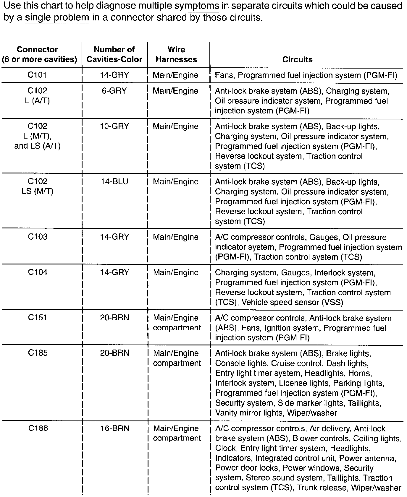
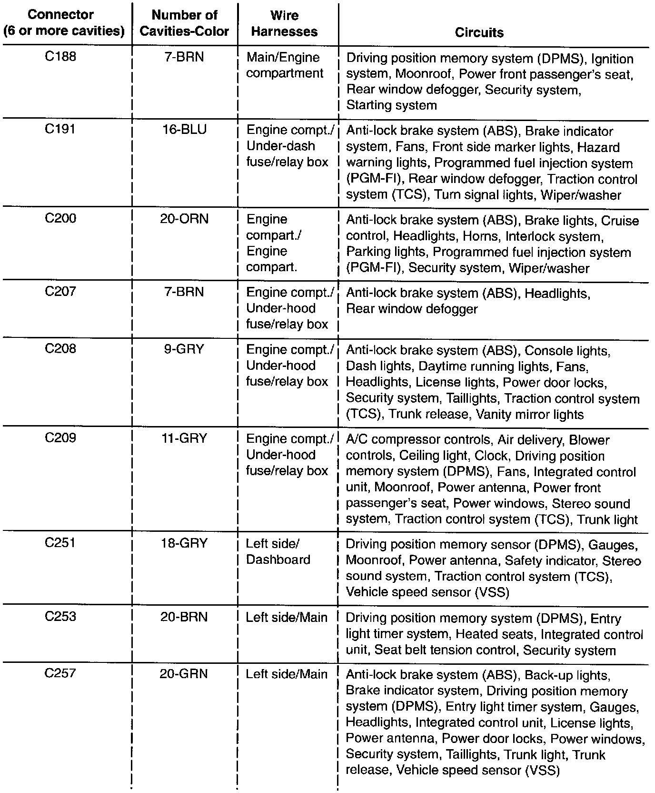
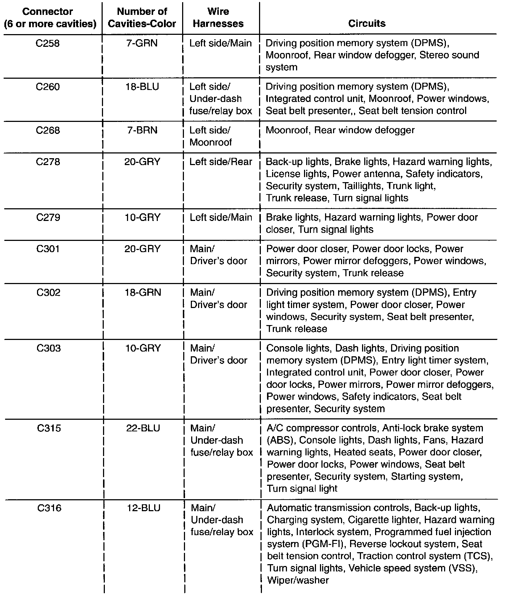
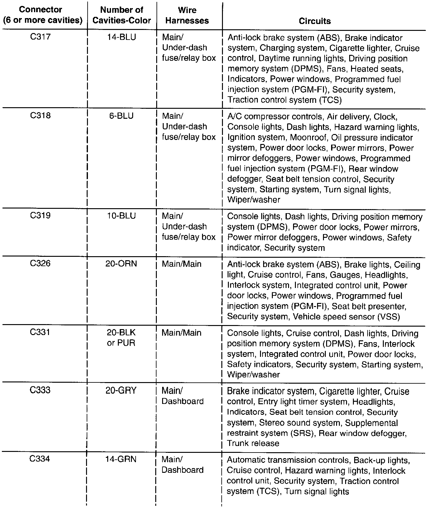
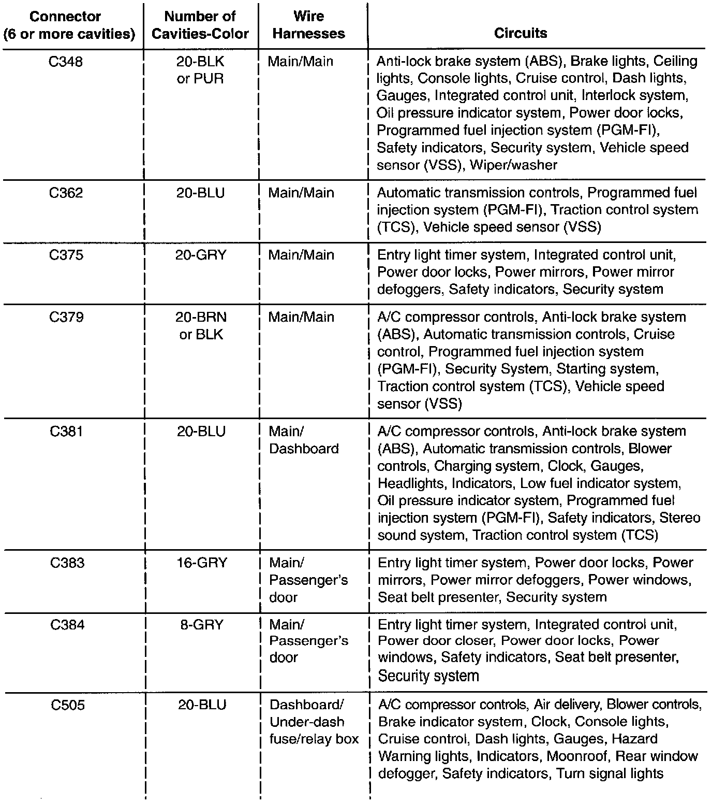
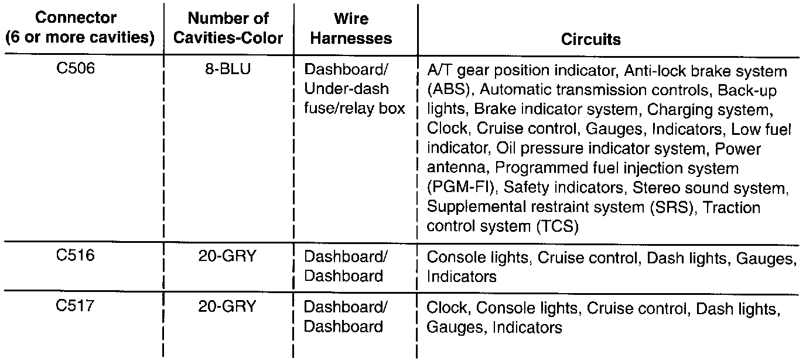

Connector/Circuit ID
Circuit Identification For In-Line And Fuse Box Connectors (part 1 Of 6):

Circuit Identification For In-Line And Fuse Box Connectors (part 2 Of 6):

Circuit Identification For In-Line And Fuse Box Connectors (part 3 Of 6):

Circuit Identification For In-Line And Fuse Box Connectors (part 4 Of 6):

Circuit Identification For In-Line And Fuse Box Connectors (part 5 Of 6):

Circuit Identification For In-Line And Fuse Box Connectors (part 6 Of 6):
